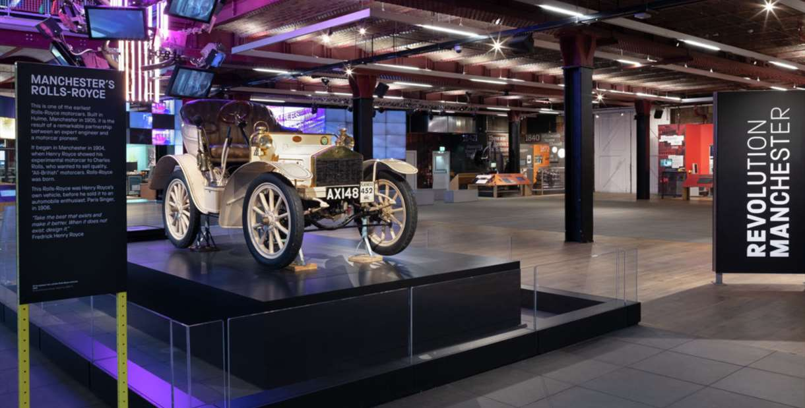

Home Christmas Markets Trafford Centre Science and Industry Tourist Attractions
The Science and Industry Museum sits in the heart of Manchester, the world’s first industrial city. It is a place full of amazing objects and revolutionary ideas that changed the world forever.The Science and Industry Museum sits in the heart of Manchester, the world's first industrial city. It houses the world's oldest surviving passenger railway station and the world's first railway warehouse from 1830, which are located at the end of the museum site. On a visit to the museum, you will see amazing objects and learn about the men and women whose ideas changed the world forever. Daily demonstrations bring the museum's world class collection of textile and industrial machinery to life. There are interactive exhibits to explore and a regular programme of changing exhibitions to enjoy. 